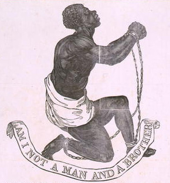
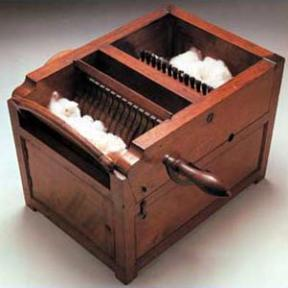
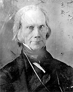

|
Slavery developed mostly in the Southern colonies, with the
first shipment of slaves arriving in Virginia in 1619. From
almost the beginning, slavery served not only a purely
economic function, but also to maintain solidarity between
poorer and richer whites. In other words, slavery was the
basis for the South¹s economic and social systems. All
profits generated by this system were poured into expanding
it, by buying more land and slaves. In the North, on the
other hand, diversification and self-sufficiency were the
rule. Profits were invested in commerce, fisheries, and
industrial growth. Part of the reason for the divergence
|

Some Northerners, mostly Quakers and other
liberal Christian groups from the Mid-Atlantic states, were deeply
disappointed that the Constitution did not end slavery. They became
the first abolitionists, and immediately began to generate literature
and images to rally support for their cause.
|
between North and South was climactic, Northern soil was not
conducive to large-scale farming. In any case, the cultural
and economic differences between North and South were well-
established by the time the Constitution was written in
1787.
Sectional Differences and the Constitution
The sectional differences that had developed between the
North and the South were a major source of conflict at the
Constitutional Convention. Two issues that had to be
resolved were directly related to slavery. The first was the
question of representation. As the Constitution was set up,
states were given representation in the House of
Representatives based on population. The Northern States did
not want slaves counted at all for purposes of
representation in the government, while the South wanted
complete enumeration. The result was a compromise which
counted five slaves as three people.
The other contentious issue that related to slavery was the
slave trade. The debate over the slave trade was unusual
because deep Southern States (who wanted slaves) and New
England states (whose merchants made money from the trade,
and who were concerned about getting the Constitution
adopted) unified in support of continuing the trade.
Delegates from Maryland and Virginia were opposed to it,
partially because they no longer relied as much on imported
slaves and partially because they were heavily influenced by
the natural rights ideology of the Revolution and
Jefferson. The eventual resolution was a compromise by which
the slave trade was ended in 1808.
The Fugitive Slave Act of 1793
In the years after the Constitution was adopted, the
Northern and Southern states continued to grow further
apart. A Congressional act of 1793, the Fugitive Slave Act,
empowered federal marshals and magistrates to return
|

Eli Whitney's cotton gin
|
runaway slaves to their owners. Many Northern states passed
laws almost immediately trying to block its enforcement.
This was the first instance of sectional differences being
resolved by force rather than by compromise.
Industrialization and its Impact
At the same time, in the years between 1800 and 1820, the
South and North grew apart even more culturally and
economically. In the South, the culture moved away from the
notion of slavery as an unfortunate situation that would
eventually be gotten rid of. Instead, Southerners began to
develop a defense of slavery. This was probably the result,
to a large extent, the economic changes that were affecting
the North and South. In the South, the invention and
proliferation of the cotton gin allowed cotton farming (and
thus slavery) to spread across the Deep South.
At the same time that the South was becoming even more
firmly committed to cotton, the North was industrializing. A
major impetus for this was the events surrounding the War of
1812, which shut down trade with Britain and France for
several years, and forced Northerners to create their own
manufactured goods. In any case, the industrialization of
the North meant that the economy of the Northern states was
rapidly becoming even more different from the economy of the
Southern states.
Industrialization also had some relevant side-effects. Part
of the process of modernization was the growth of new forms
of communication and transportation. The development of
railroads, the telegraph and the steam press allowed for the
first daily newspapers. Newspapers tended to be very
partisan and served a major role in inflaming sectional
conflict, solidifying distinctions of opinion, and
promoting regional stereotypes. Technology also led to
tension in another way. The growth of railroads and canals
caused many national leaders, most notably Henry Clay, to
argue for a system of national internal improvements, to be
organized around a federally-funded transportation
|

The "Great Compromiser," Henry Clay of
Kentucky
|
infrastructure, known as the "American System" Eventually,
after many years of debate, this developed into a sectional
issue, with the South opposing and the North advocating
federal support for national improvements.
The Missouri Compromise
The final contribution that the founding fathers' generation
made to the growing sectional tension was Thomas Jefferson's
decision to negotiate the purchase of Louisiana. It was
after the Louisiana Purchase that the expansion of slavery
became an issue for the first time. In 1819, Missouri
petitioned for entry into the Union as a slave state. This
threatened to upset the balance of power in the Senate,
which had an equal number of representatives from slave and
free states at the time. Representative James Tallmadge
offered a bill that would have allowed Missouri in with the
stipulation that slavery be abolished there. Not
surprisingly, the bill passed the House (which had a large
majority of Northern Congressmen, since the North had many
more people) but not the Senate. Finally, Henry Clay managed
a compromise that temporarily postponed the issue. The
Missouri Compromise of 1820 let Missouri in as a slave
state, Maine in as a free state, and said that there would
be no slavery in the Louisiana purchase north of the 36° 30'
parallel.
Source: Christopher Bates for the History 139A website
|